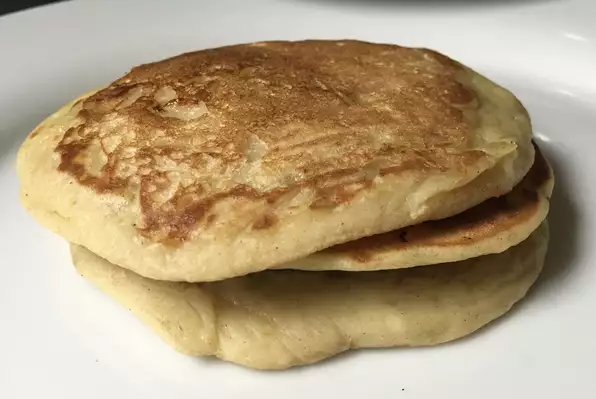

Banana Pancakes

Description
A simple banana pancakes recipe.
This recipe will yield 6 pancakes.
Ingredients
Pancake Batter
- 1 cup all-purpose flour
- 1 tablespoon white sugar
- 2 teaspoons baking powder
- 1/4 teaspoon salt
- 1 egg, beaten
- 1 cup milk
- 2 tablespoons vegetable oil
- 2 ripe bananas, mashed
Steps
- Combine flour, white sugar, baking powder and salt.
In a separate bowl, mix together egg, milk, vegetable oil and bananas.
- Stir flour mixture into banana mixture; batter will be slightly lumpy.
- Heat a lightly oiled griddle or frying pan over medium high heat.
Pour or scoop the batter onto the griddle, using approximately 1/4 cup for each pancake.
Cook until pancakes are golden brown on both sides; serve hot.